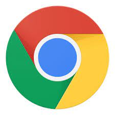
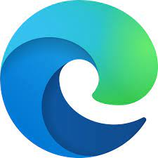

Tugas Praktikum Pemrograman Web - Dimas Aprilian

|
Nama : Dimas Aprilian Sulaiman Putra |
|
|
Nama : Dimas Aprilian Sulaiman Putra |
| Home | About Me | Artikel 1 | Artikel 2 | Artikel 3 |
|  |
Google ChromeGoogle Chrome adalah browser web lintas platform yang dikembangkan oleh Google . Ini pertama kali dirilis pada tahun 2008 untuk Microsoft Windows , dibangun dengan komponen perangkat lunak gratis dari Apple WebKit dan Mozilla Firefox . [13] Kemudian porting ke Linux , macOS , iOS , dan Android , di mana itu adalah browser default. [14] Peramban juga merupakan komponen utama Chrome OS , yang berfungsi sebagai platform untuk aplikasi web . |

|
Mozilla FirefoxMozilla Firefox atau hanya Firefox adalah peramban web sumber terbuka dan gratis yang dikembangkan oleh Mozilla Foundation dan anak perusahaannya, Mozilla Corporation . Firefox menggunakan mesin rendering Gecko untuk menampilkan halaman web, yang menerapkan standar web saat ini dan yang diantisipasi. Pada tahun 2017, Firefox mulai menggabungkan teknologi baru dengan nama kode Quantum untuk mempromosikan paralelisme dan antarmuka pengguna yang lebih intuitif . Firefox tersedia untuk Windows 7 dan versi yang lebih baru, macOS , dan Linux . Port tidak resminya tersedia untuk berbagai sistem operasi mirip Unix dan Unix , termasuk FreeBSD , OpenBSD , NetBSD , illumos , dan Solaris Unix . Firefox juga tersedia untuk Android dan iOS . Namun, versi iOS menggunakan mesin tata letak WebKit alih-alih Gecko karena persyaratan platform, seperti semua browser web iOS lainnya. Versi Firefox yang dioptimalkan juga tersedia diAmazon Fire TV , sebagai salah satu dari dua browser utama yang tersedia dengan Amazon's Silk Browser . |
|  |
Microsoft EdgeMicrosoft Edge adalah browser web lintas platform yang dibuat dan dikembangkan oleh Microsoft . Ini pertama kali dirilis untuk Windows 10 dan Xbox One pada 2015, untuk Android dan iOS pada 2017, untuk macOS pada 2019, dan untuk Linux pada 2020, dan dapat menggantikan Internet Explorer pada Windows 7 , Windows Server 2008 R2 dan versi yang lebih baru tetapi tidak seperti IE, browser ini tidak mendukung Windows Vista atau versi sebelumnya. |